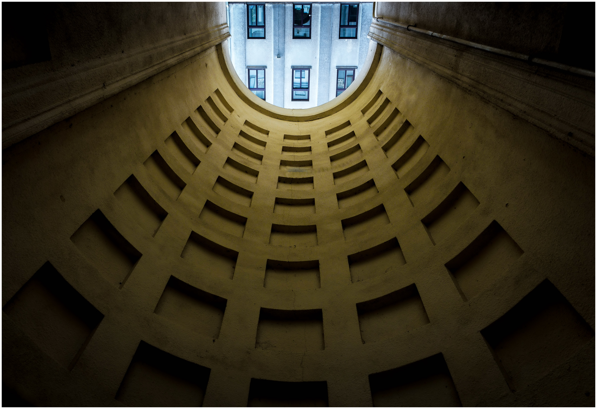
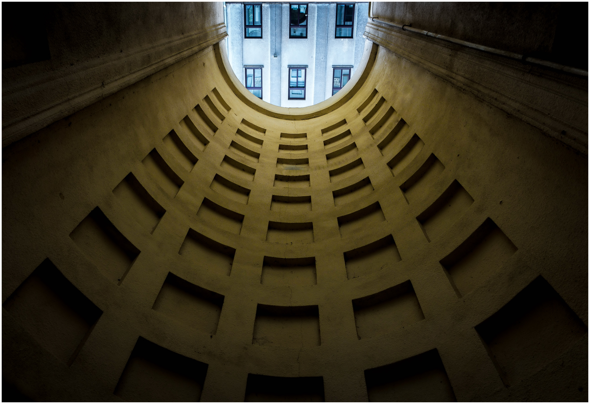

Ką bendro turi žemės drebėjimai ir planetos paviršių pasiekiantys kosminiai spinduliai? Pasirodo, šį tą turi:
išnagrinėjus pusšimčio metų duomenis paaiškėjo, kad didesnis kosminių spindulių intensyvumas gerai prognozuoja žemės
drebėjimų sustiprėjimą po poros savaičių. Hipotezė, kad kosminiai spinduliai ir seisminiai procesai gali turėti
ryšį, iškelta jau senokai, bet tik dabar tyrėjai surinko pakankamai detalių duomenų, kad galėtų ją nuodugniai
patikrinti. Jie paėmė trijų detektorių, įrengtų rusijoje, Suomijoje ir Argentinoje, kosminių spindulių duomenis, JAV
geologijos tarnybos žemės drebėjimų duomenis, bei Saulės dėmių duomenis, ir išnagrinėjo jų tarpusavio koreliacijas.
Aptikta labai aiški koreliacija tarp kosminių spindulių, pasiekiančių Žemės paviršių, srauto ir bendro žemės
drebėjimų, kurių stiprumas viršija keturis balus, intensyvumo